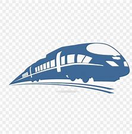
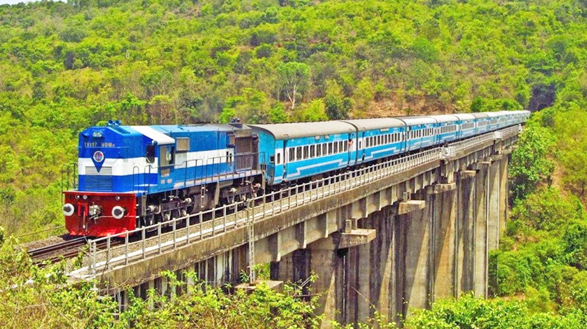

KUMAR EXPRESS ROUTE
KUMAR EXPRESS runs between Rajahmundry Railway Station and Guntakal Railway Station. Regarding KUMAR EXPRESS timings,
this train departs at 03:35 PM from the source station to arrive at the destination station at 04:00 AM . Total duration of the train
from Rajahmundry Railway Station to Guntakal Railway Station is 12 hrs 25 mins .

KUMAR EXPRESS runs from Rajahmundry Railway Station on 7 days a week ( Friday, Monday, Saturday, Sunday, Thursday, Tuesday, Wednesday ).
There are 10 stoppages between Rajahmundry Railway Station(RJY) and Guntakal Railway Station(GTL) .KUMAR EXPRESS route covers TADEPALLIGUDEM(TDD), ELURU(EE), VIJAYAWADA(BZA),
GUNTUR(GNT), MARKAPURAM ROAD(MKR), GIDDALUR(GID), NANDYAL(NDL), DHONE(DHNE). Finally, it arrives at Guntakal Railway Station. It covers the distance of 492 KM km in 12 hrs 25 mins . For all the train-related information like live
train running status and PNR status enquiry, you can rely on Goibibo website or app. You can access accurate and detailed information in just a few clicks
You can check KUMAR EXPRESS(03668) seat availability through Goibibo and also do Tatkal ticket booking. Tatkal ticket booking window opens
at 10:00 AM for AC class and at 11:00 AM for sleeper class. Goibibo’s easy train ticket booking procedure and exciting offers allow users to
book their train tickets at the lowest possible prices. You can use your goCash and check for coupon codes which are updated regularly on
the site and app. It is mandatory to have a registered IRCTC ID for booking your train ticket through Goibibo. Goibibo also offers change of
IRCTC password in case you have forgot IRCTC password. Also you can get your IRCTC username on Goibibo, in case you have forgot IRCTC
userid. Goibibo in collaboration with Indian railways also offers IRCTC registration and signup through its IRCTC Create User Id page As per
Indian Railways and IRCTC guidelines, a female senior citizen of minimum 58 years of age is eligible for 50% concession and a male senior
citizen of minimum 60 years is eligible for 40% concession.There are anumber of ways to order food on your train journey. You can book a meal in the Indian Railways by calling at 1323, text to 139 or by visiting
online IRCTC website and through pantry car.
There are many hotels in Guntakal near Railway Station where you can choose to stay. Goibibo offers various categories of hotels
in Guntakal like Couple Friendly hotels , Budget Hotels are some of the prominent hotels.